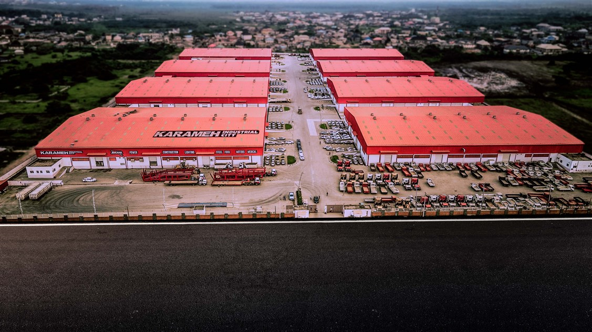
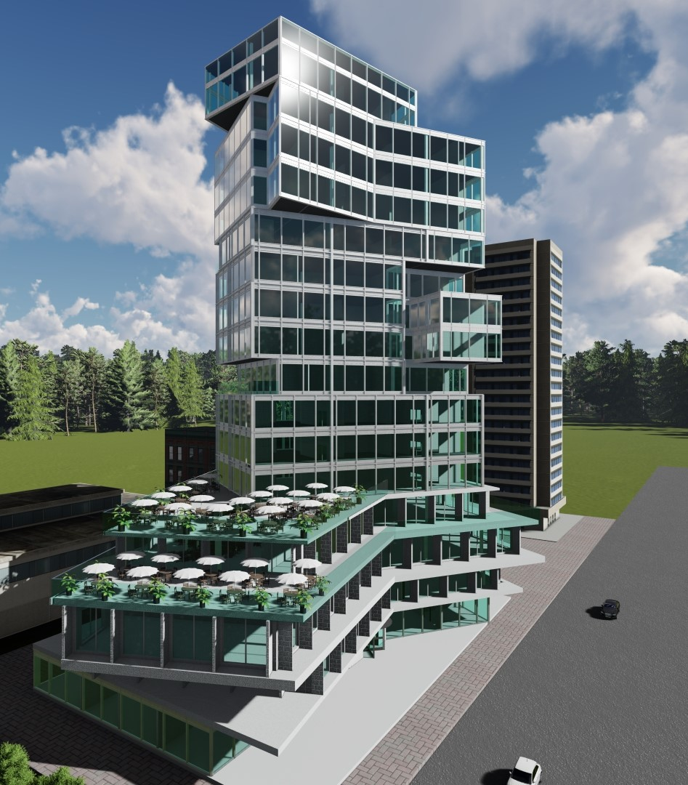
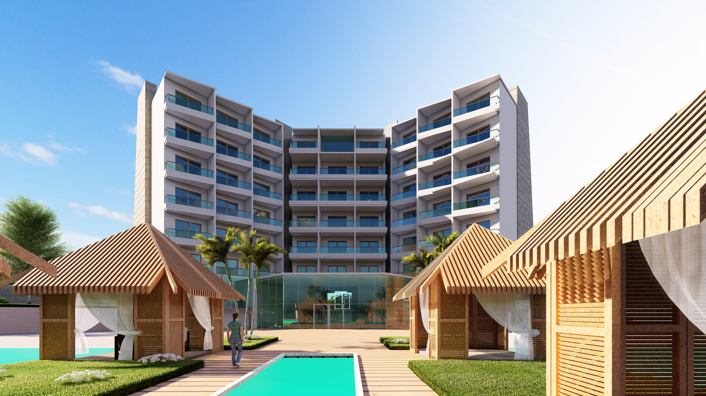

The full logo stays fixed and static in the hero instead of behaving like a floating ornament.
The overall tone is more editorial, which can help the company read as deliberate and composed rather than overloaded.
This version strips the landing page down to a centered opening statement, then builds confidence through proof blocks. It suits a company that wants to look calm, credible, and sharply managed from the first scroll.
The full logo stays fixed and static in the hero instead of behaving like a floating ornament.
The overall tone is more editorial, which can help the company read as deliberate and composed rather than overloaded.

The newly replaced industrial image is used as a lead story panel here rather than a secondary gallery item.

Option 2 balances industrial work with concept-led commercial imagery for a broader first impression.

The lighter palette lets the hospitality and interior imagery breathe without losing the company’s engineering character.
Option 2 works if you want the homepage to feel more composed and less dense while still keeping the company’s services and proof points immediately accessible.
The static full logo becomes the primary visual anchor and gives the page a steadier, more deliberate tone.
The sky blue extracted from the supplied mark now drives buttons, links, borders, chips, and highlight surfaces.
Unnecessary corporate-detail clutter is removed from the homepage so the message stays focused on delivery and trust.
The links still route to the cleaned About, Services, Projects, Contact, and Why Choose Us pages for full review.
This direction treats company information as supporting context instead of a dominant homepage section.
Option 2 is less aggressive than Option 1 and less editorially layered than Option 3. It’s the easiest one to present if you want calm and clarity to be the first impression.